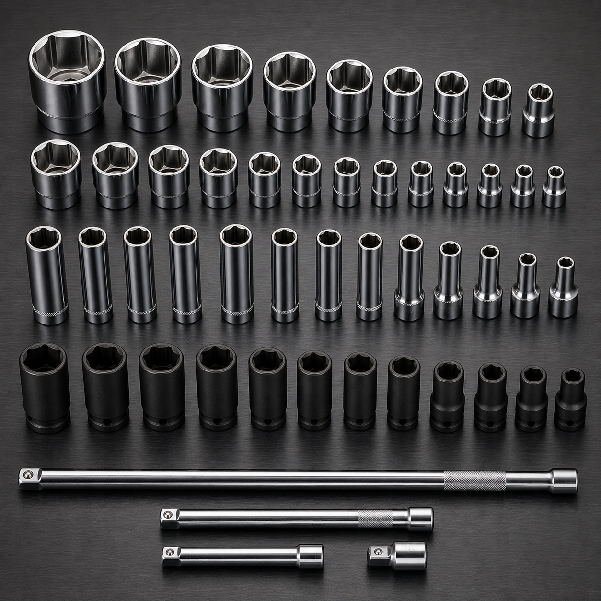
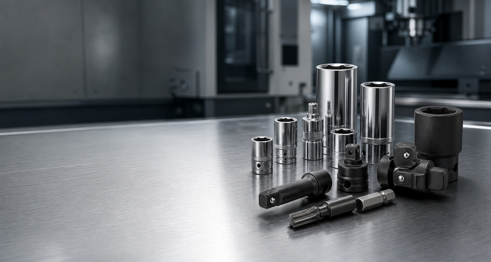
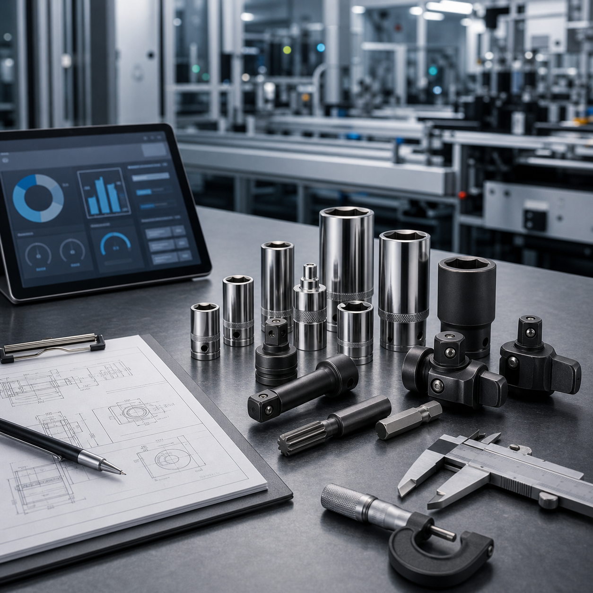

工业套筒系列
标准套筒、长套筒、冲击套筒、薄壁套筒和特殊驱动规格，适用于高频装配与设备维护。
- 覆盖多种方驱、六角和特殊接口
- 可选铬钒钢、铬钼钢及定制材料
- 支持批量包装、标识和追溯需求

Industrial sockets & assembly tools
我们为制造企业、自动化集成商和设备厂商提供稳定、精密、可定制的工业工具解决方案，让每一次装配都更可靠。
Precision, durability, cooperation
HANTORQ 工业工具专注工业套筒和装配工具，服务汽车、工程机械、能源设备、智能制造和设备维护等行业。我们强调材料、热处理、尺寸精度和交付稳定性，也重视与客户工程团队共同解决现场工况问题。
Products
从标准批量供应到特殊工况适配，围绕驱动规格、长度、壁厚、材料和表面处理提供灵活选择。

标准套筒、长套筒、冲击套筒、薄壁套筒和特殊驱动规格，适用于高频装配与设备维护。

针对自动化产线、受限空间和高扭矩工位，提供连接件、适配器、延长杆和专用工具头。

面向主机厂、设备厂、经销体系和集成商，提供稳定供应、项目打样、批量交付和质量协同。
Custom service
真正的定制来自对现场工况的理解。我们会围绕装配空间、目标扭矩、节拍、寿命、设备接口、材料强度和维护方式，给出可制造、可验证、可交付的工具方案。
明确使用场景、接口尺寸、扭矩范围、产线节拍和寿命要求。
根据图纸或样件确定结构、材料、热处理和表面处理方案。
配合尺寸、硬度、扭矩和装配验证，形成稳定批量交付。
B2B cooperation
我们理解 B2B 采购不仅看产品，也看沟通效率、交付纪律、质量稳定和问题响应。网站后续可继续扩展案例、证书、下载中心和多语言产品资料。
为产线装配、维修保养和工装升级提供工具配套。
围绕设备接口和终端客户需求开发专用工具。
支持产品组合、区域供应和长期订单协同。
适配机器人、拧紧轴和特殊装配工位。
Culture
把尺寸、公差、材料和热处理视为产品语言，而不是生产备注。
重视可重复交付和持续改进，让客户不用反复解释同一个问题。
从标准品到非标项目，保持清晰沟通和务实的工程判断。
GEO ready
本页已内置 Schema.org 的 Organization、WebSite、Offer、Product、Service 和 FAQPage 数据，并用清晰标题、产品实体、服务实体、行业关键词和问答内容帮助搜索引擎及 AI 摘要系统理解网站。
Contact
把产品图纸、样件照片、规格参数或应用场景发给我们，我们会协助判断可行的材料、结构和交付方式。